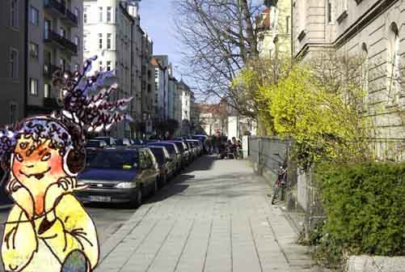
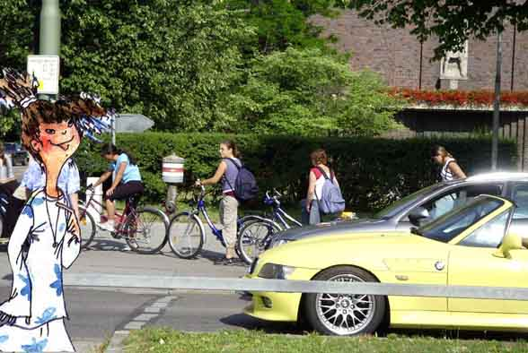
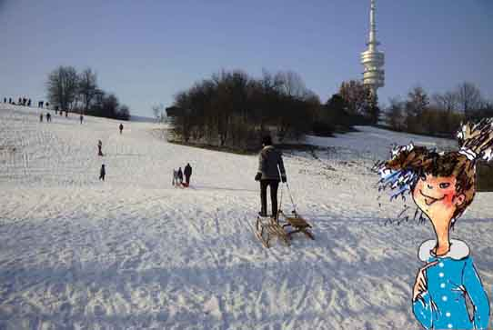
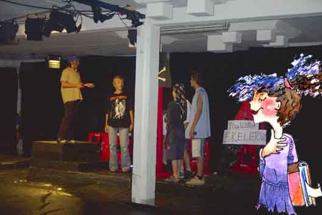
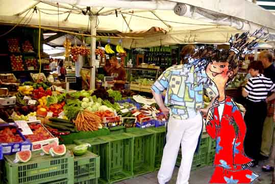

Hallo, ich heiße Stefanie Sander, aber meine Freunde nennen mich Steffi. Meine Familie kommt aus München und wir wohnen in der Giselastraße, in dem Haus rechts, im ersten Stock.

Ich bin 12 und gehe in die 6. Klasse des Gisela-Gymnasiums. Ich wohne nicht weit von der Schule und gehe oft zu Fuß. Dann brauche ich 15 Minuten, aber mit dem Fahrrad geht es viel schneller. Viele Mädchen aus meiner Klasse kommen mit dem Fahrrad in die Schule.

Ich mag den Winter, weil ich da meinen Geburtstag habe, am 15. Februar. Im Februar gibt es in München oft Schnee. Dann gehen meine Freunde und ich in den Olympiapark. Hier kann man Ski fahren und rodeln. Von da oben fahre ich hinunter. Das macht echt viel Spaß!

Also, ich habe viele Hobbys: Lesen, Musik hören, Fahrrad fahren und vieles mehr. Ich spiele auch im Schultheater. Zu Weihnachten haben wir eine Piratengeschichte gezeigt. Auf Englisch. Die haben wir selbst erfunden. Unser Englischlehrer, Herr Stenger, hat uns natürlich geholfen.

Ich wohne gern in München. Oft gehe ich auf den Viktualienmarkt. Hier kaufen viele Leute ein. Meine Mutter kauft hier frisches Obst und Gemüse. Und dann kocht sie italienisch. Das ist immer super lecker.